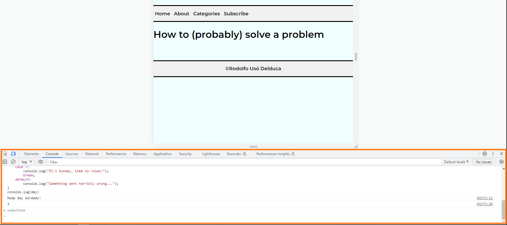

In this post, I will share some of my experiences while attempting to solve problems.
I'm going to tell a story about a little problem I had to solve a few weeks ago. The problem was related to a JavaScript code where I had to add functionalities to mouse buttons while navigating a webpage. For instance, clicking an element on the page with the left button once would change the color of that element to blue, clicking with the right button would change the color to green, and finally, double-clicking with the left button would make the element "invisible." I searched for solutions online and found some interesting and straightforward ones. I chose one of them and wrote the code on my page. I checked the page, and the buttons changed the color to blue when clicked with the left button. I repeated the process for the green color, but when I tested it, nothing happened! Even worse, when I clicked with the right button, the mouse opened the page's options.
Now, I had a problem, and I didn't exactly know what my problem was. I went to the Discord group and asked if someone could help me out. A colleague offered to assist and showed me their page with all the functionalities working perfectly. It was then that I realized my problem wasn't with the code, but rather with the way it was being "rendered" on my end. I left the conversation, reopened my page, and this time, I didn't open the "console" of the browser. The console is a part of your browser where you can check if the codes you write are working correctly or if there are any errors. Here's an example:
It wasn't easy to realize that the problem wasn't what I initially thought it was. The whole process was time-consuming and, in a way, painful. I learned that Google Chrome, when the console is open, isn't 100% reliable in some specific cases like this. I also learned that even though the problem may seem simple, it can give us a big headache! Remember, problem-solving can be a challenging journey, and sometimes the solution lies in unexpected places. The key is to keep an open mind, seek help when needed, and persevere until you find the root cause and resolve the issue.
After struggling for a while to solve a particular problem, I thought I had mastered the essence of it. However, that couldn't be further from the truth. Learning to solve problems takes time and usually comes with a lot of headaches.
I don't feel that I have been able to solve any problem in an "elegant" way, but I believe that stepping back and gaining a better perspective often leads to quicker results. When facing a programming-related issue, my first stop is usually Google. If I can't find a straightforward and understandable solution, I move on to the next step, which is asking ChatGPT for help. The answers are interesting, but sometimes the content can be a bit confusing. The next step is refining the question prompt until a reasonable response appears. If it's still unclear, I turn to the Discord groups for further assistance.
What I liked most during this process is that the way I approach a question is changing, and I am learning to search for a solution more effectively. The problem may still be there, but the path to finding a potential solution is becoming less convoluted
Remember, problem-solving is an evolving skill, and each challenge you encounter helps you refine your approach and become a more efficient problem-solver over time. Embrace the learning process and keep up the great work!
The techniques I've been using to solve problems are writing pseudocode, reading error messages, explaining the issue to myself with drawings in my notebook, utilizing Google, ChatGPT, and seeking help from colleagues and facilitators.
As I've previously pointed out, asking for help from others requires a certain level of maturity and humility. Some people might find it challenging to ask for assistance due to cultural factors or a fear of feeling inferior. However, it's essential to recognize that seeking help is not a sign of weakness but a valuable skill in itself.
In the past, I may have tried to solve problems alone without sharing the situation with others, which could lead to missed opportunities for assistance. Opening up to others and seeking their input can be immensely beneficial, as it allows me to tap into a collective knowledge pool and gain new perspectives.
I've becvome more inquisitive since I left my country in 2012, and being part of a supportive community where others are willing to help is indeed a great relief. I'll remember that collaboration and seeking guidance from others can lead to more efficient problem-solving and continuous learning, making me a stronger and more resourceful problem solver. I'll keep up the positive attitude towards problem-solving and my openness to learn from others!